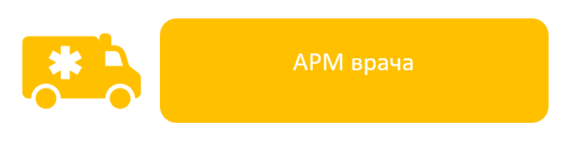

Тема 3.1. Представление об АРМ врача

Другими словами,
это набор техники и программ, с помощью которых врач:
- узнаёт нужную
информацию о пациенте,
- ставит
диагноз,
- выписывает
рецепты,
- оформляет
документы.
АРМ врача состоит
из:
- Компьютера (или
ноутбука),
- Монитора,
- Клавиатуры и
мыши,
- Принтера (для печати
рецептов и направлений),
- Сканера (иногда — для
сканирования анализов),
- Специальных
медицинских программ (их называют
медицинскими информационными системами).
Например,
одна из таких программ — это электронная медицинская
карта, в которую заносятся все данные о пациенте: анализы, болезни,
лекарства, которые он принимает.
Преимущества
АРМ врача:
?
Экономит время — не нужно писать от руки, всё делается
быстрее.
?
Повышает точность — меньше ошибок при записи данных.
?
Сохраняет информацию — все данные хранятся в электронном виде и не
теряются.
?
Облегчает общение с другими врачами — информацию можно быстро переслать
по сети.
?
Помогает в постановке диагноза — врач может быстро посмотреть результаты
анализов, историю болезней, даже советы от других специалистов.Пример
из жизни
Представьте
себе: приходит пациент на приём. Врач открывает его электронную карту,
видит, что он уже болел гриппом, какие лекарства ему помогли, какие анализы он
сдавал. Не нужно искать бумажки — всё в компьютере. Врач тут же назначает
лечение и отправляет рецепт на электронную почту или в
аптеку.
Важно
помнить: компьютер помогает врачу, но не заменяет его.
Врач — это
человек, который думает, анализирует, чувствует, умеет разговаривать с
пациентом.
Компьютер — это просто инструмент, который помогает врачу
быть лучше, быстрее и внимательнее.
Где
ещё используют АРМ в медицине?
- В
лабораториях — для обработки анализов.
- В
больницах — для составления расписания операций.
- В
скорой помощи — для быстрой передачи информации о пациенте в
больницу.
- В
аптеках — чтобы знать, какие лекарства есть в
наличии.
Теперь
вы знаете, что автоматизированное рабочее место врача — это не просто
компьютер на столе. Это целая система, которая помогает врачу заботиться о
людях.
Современная медицина невозможна без информационных технологий, и, возможно, в будущем кто-то из вас станет врачом, который будет использовать ещё более умные технологии для помощи людям!